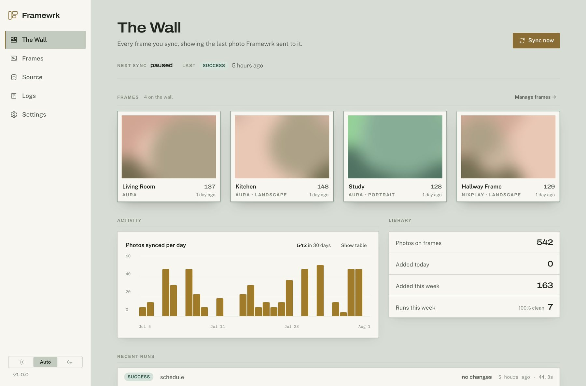
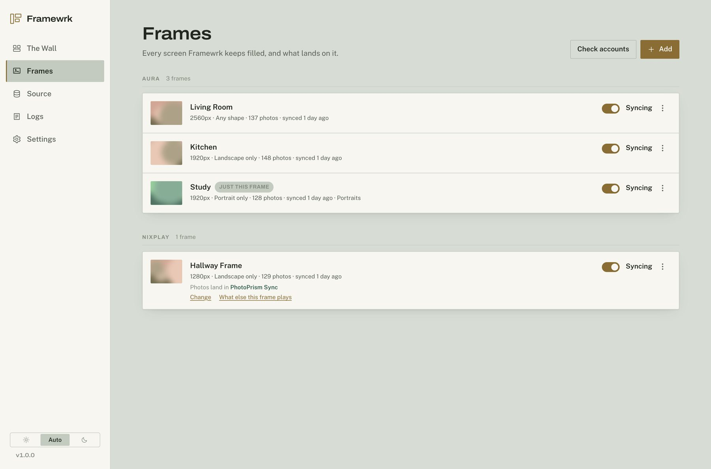
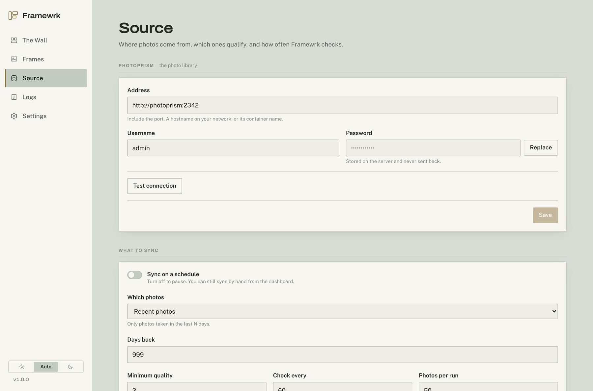

Framewrk watches PhotoPrism, picks the photos that match your rules, and sends them to your Aura and Nixplay frames at the size and shape each screen wants. It remembers what it has already sent, so nothing goes twice — and it takes photos back off when they stop qualifying.
One container. No config file. Everything is set up in the console.
A portrait frame gets portrait photos. A 1280px screen gets a 1280px file. You set the rule once per frame, or let the whole house share one.
Every photo is tracked against the frame it went to, by ID. Rename a frame in the Aura or Nixplay app and Framewrk just adopts the new name.
Narrow a frame to one album and the rest come down on the next run. The console tells you what will happen before it happens.
Framewrk has no configuration file and nothing to set before it starts. Everything — PhotoPrism, your frame accounts, which photos qualify, what each screen gets — is here.



There is nothing to configure first — no config file, no environment to set. One container, one folder, then everything else happens in the console.
$ mkdir framewrk && cd framewrk
$ curl -O https://raw.githubusercontent.com/smichalczyk/framewrk/main/compose.yaml
$ docker compose up -d
$ docker compose logs | grep -A2 "Admin password"
Published for amd64 and arm64. Each guide ends
with the one thing that actually catches people out on that platform.
With Aura, a frame is a frame and photos go straight to it. Nixplay does not work that way: you upload into an album, and an album is played by zero or more frames. Most tools hide that and get it wrong. Framewrk shows you frames, and says which album feeds each one.
So you can change where a frame's photos land without re-uploading a thing, see what else a frame is playing, and get told plainly when an album is on no frame at all — because nothing you sync into it will ever reach a screen.
{kind=link}
{kind=link}
{kind=link}